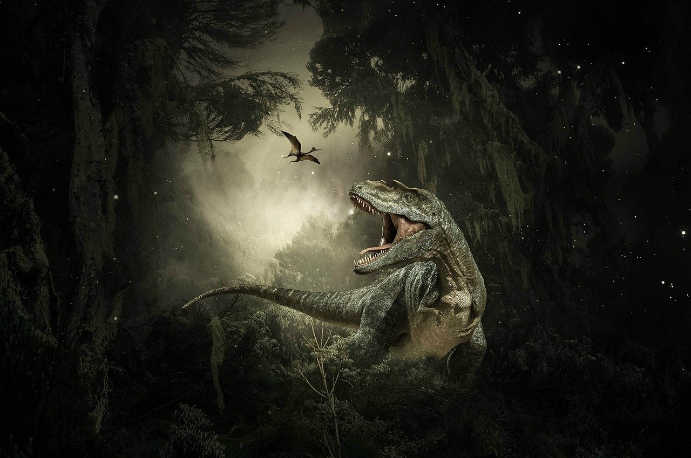
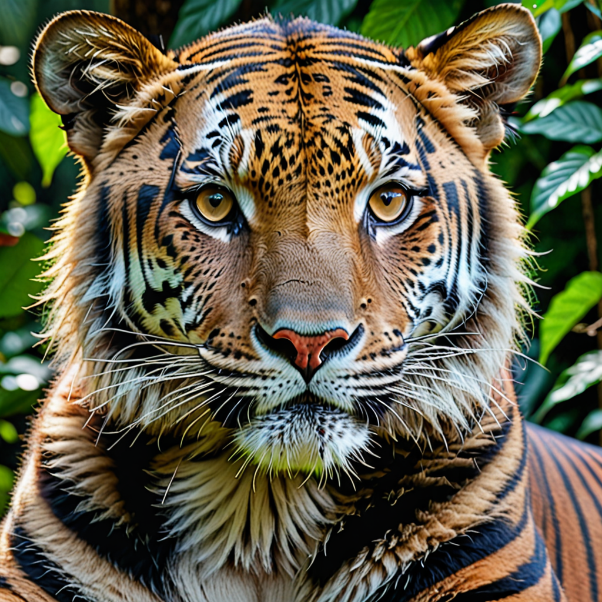
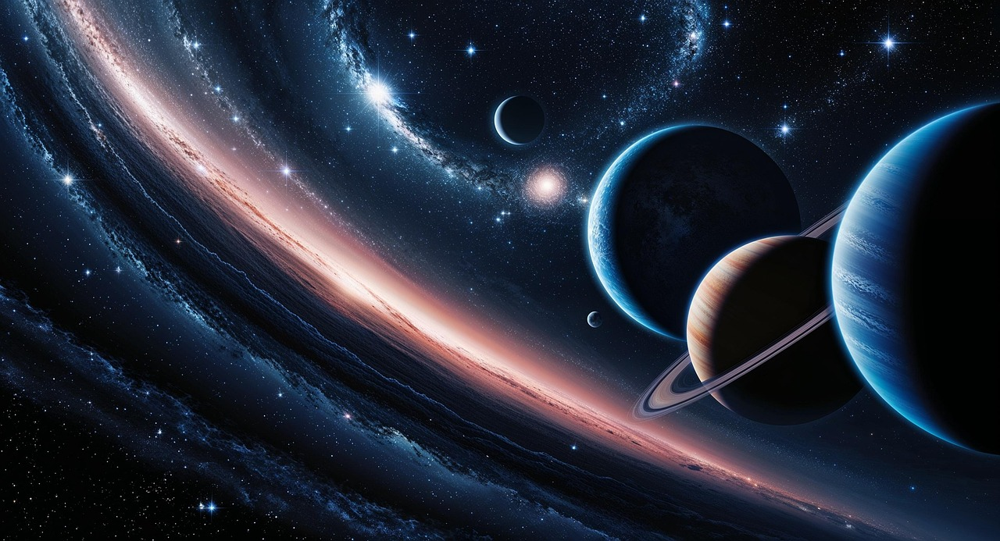

Mérlin é uma criança com hiperfoco em biologia, ama estudar as animais, os dinossauros e o cosmos

Os dinossauros são como gigantes do passado que despertam a imaginação. T-Rex, um predador poderoso, ou Braquiossauro, que era tão grande que parecia uma montanha ambulante. Há milhões de anos, repleta dessas criaturas incríveis, e sonha em desvendar todos os seus segredos.

Estudar os animais e descobrir como cada espécie tem características únicas. Aprender que os corvos são capazes de usar ferramentas e que os elefantes têm uma memória incrível. Para ele, os animais são mestres da adaptação, mostrando que a natureza é cheia de surpresas e lições.

Se maravilhe com as estrelas, os buracos negros e a ideia de que existem planetas distantes que podem abrigar vida. Olhar para o céu é como abrir um livro cheio de histórias ainda não contadas, descobrir mais sobre os mistérios do cosmos.